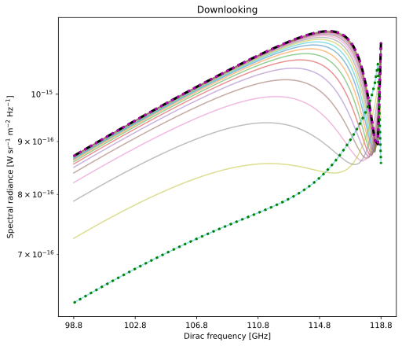
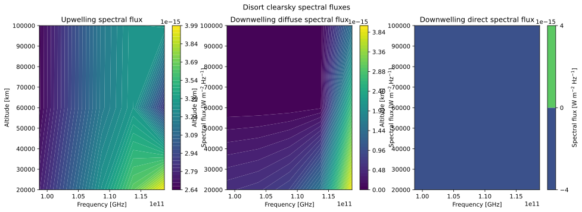
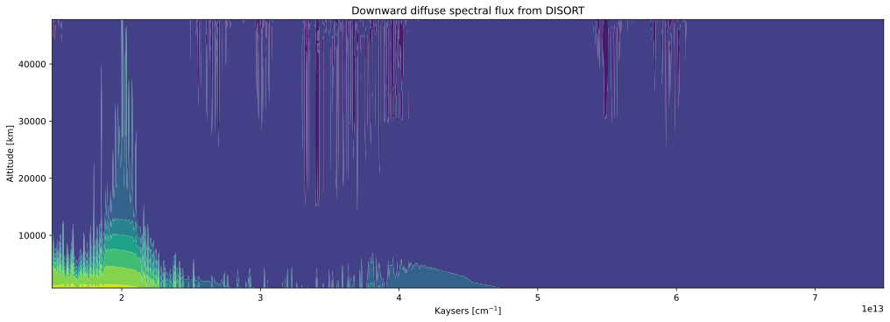
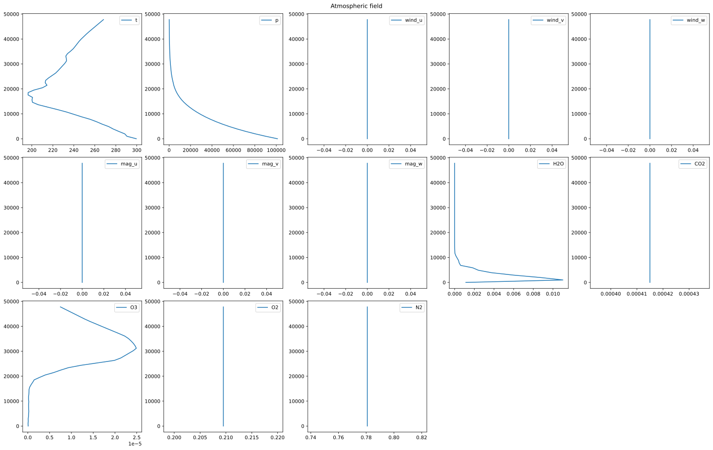

Disort
Clearsky radiance
import os
import matplotlib.pyplot as plt
import numpy as np
import pyarts3 as pyarts
# Download catalogs
pyarts.data.download()
toa = 120e3
lat = 0
lon = 0
NQuad = 40
ws = pyarts.Workspace()
# %% Sampled frequency range
line_f0 = 118750348044.712
ws.freq_grid = np.linspace(-20e9, 2e6, 101) + line_f0
# %% Species and line absorption
ws.abs_speciesSet(species=["O2-66"])
ws.ReadCatalogData()
# %% Use the automatic agenda setter for propagation matrix calculations
ws.spectral_propmat_agendaAuto()
# %% Grids and planet
ws.surf_fieldPlanet(option="Earth")
ws.surf_field[pyarts.arts.SurfaceKey("t")] = 295.0
ws.atm_fieldRead(
toa=toa, basename="planets/Earth/afgl/tropical/", missing_is_zero=1
)
ws.atm_fieldIGRF(time="2000-03-11 14:39:37")
# %% Checks and settings
ws.spectral_rad_transform_operatorSet(option="Tb")
ws.spectral_rad_space_agendaSet(option="UniformCosmicBackground")
ws.spectral_rad_surface_agendaSet(option="Blackbody")
# %% Core Disort calculations
ws.disort_settings_agendaSetup()
ws.disort_spectral_rad_fieldProfile(
lon=lon,
lat=lat,
disort_quadrature_dimension=NQuad,
disort_legendre_polynomial_dimension=1,
disort_fourier_mode_dimension=1,
)
# %% Equivalent ARTS calculations
ws.ray_pathGeometricDownlooking(
lat=lat,
lon=lon,
max_stepsize=1000.0,
)
ws.spectral_radClearskyEmission()
# %% Plot results
f = ws.disort_spectral_rad_field.freq_grid
fig, ax = pyarts.plot(ws.disort_spectral_rad_field,
plotstyle='plot', select='down', alpha=0.5)
ax.semilogy(f, ws.spectral_rad[:, 0], "k--", lw=3)
ax.semilogy(
f,
ws.disort_spectral_rad_field.data[:, 0, 0, (NQuad // 2) - 1],
"g:",
lw=3,
)
ax.semilogy(
f,
ws.disort_spectral_rad_field.data[:, 0, 0, 0],
"m:",
lw=3,
)
ax.set_xticks(f[::20], (f[::20] / 1e9).round(1))
ax.set_ylabel("Spectral radiance [W sr$^{-1}$ m$^{-2}$ Hz$^{-1}$]")
ax.set_xlabel("Dirac frequency [GHz]")
ax.set_title("Downlooking")
if "ARTS_HEADLESS" not in os.environ:
plt.show()
# %% The last test should be that we are close to the correct values
assert np.allclose(
ws.disort_spectral_rad_field.data[:, 0, 0, 0] / ws.spectral_rad[:, 0],
1,
rtol=1e-3,
), "Bad results, clearsky calculations are not close between DISORT and ARTS"
(Source code, svg, pdf)
{kind=link}

Clearsky flux
import numpy as np
import pyarts3 as pyarts
import matplotlib.pyplot as plt
import os
# Download catalogs
pyarts.data.download()
toa = 100e3
lat = 0
lon = 0
NQuad = 40
ws = pyarts.Workspace()
# %% Sampled frequency range
line_f0 = 118750348044.712
ws.freq_grid = [line_f0]
ws.freq_grid = np.linspace(-20e9, 2e6, 5) + line_f0
# %% Species and line absorption
ws.abs_speciesSet(species=["O2-66"])
ws.ReadCatalogData()
# %% Use the automatic agenda setter for propagation matrix calculations
ws.spectral_propmat_agendaAuto()
# %% Grids and planet
ws.surf_fieldPlanet(option="Earth")
ws.surf_field[pyarts.arts.SurfaceKey("t")] = 295.0
ws.atm_fieldRead(
toa=toa, basename="planets/Earth/afgl/tropical/", missing_is_zero=1
)
ws.atm_fieldIGRF(time="2000-03-11 14:39:37")
# ws.atm_field[pyarts.arts.AtmKey.t] = 300.0
# %% Checks and settings
ws.spectral_rad_transform_operatorSet(option="Tb")
ws.spectral_rad_space_agendaSet(option="UniformCosmicBackground")
ws.spectral_rad_surface_agendaSet(option="Blackbody")
# %% Core Disort calculations
ws.disort_settings_agendaSetup()
ws.ray_pathGeometricDownlooking(lon=lon, lat=lat, max_stepsize=40_000)
ws.disort_spectral_flux_fieldFromAgenda(
disort_quadrature_dimension=NQuad,
disort_legendre_polynomial_dimension=1,
disort_fourier_mode_dimension=1,
)
assert np.allclose(
np.append(
ws.disort_spectral_flux_field.up,
ws.disort_spectral_flux_field.down_diffuse,
axis=1,
).flatten()
/ np.array([2.65924817e-15, 2.66163119e-15, 2.75440515e-15, 9.50591876e-18,
2.07341384e-17, 5.39671159e-16, 2.93074462e-15, 2.93357757e-15,
3.03918211e-15, 9.91684543e-18, 2.33720596e-17, 6.12691389e-16,
3.19265273e-15, 3.19666066e-15, 3.33784028e-15, 1.02918879e-17,
3.05098113e-17, 8.07770847e-16, 3.35251628e-15, 3.36075873e-15,
3.65036247e-15, 1.06304639e-17, 6.78038039e-17, 1.56156808e-15,
3.37235046e-15, 2.86992793e-15, 3.97673151e-15, 1.52441686e-15,
2.80896736e-15, 3.94566425e-15]),
1,
), "Mismatch from historical Disort spectral fluxes"
fig = plt.figure(figsize=(16, 5))
fig, ax = pyarts.plot(ws.disort_spectral_flux_field, fig=fig, levels=50)
fig.suptitle("Disort clearsky spectral fluxes")
[a.set_ylabel("Altitude [km]") for a in ax]
[a.set_xlabel("Frequency [GHz]") for a in ax]
[fig.colorbar(a.get_children()[0], ax=a,
label="Spectral flux [W m$^{-2}$ Hz$^{-1}$]") for a in ax]
ax[0].set_title("Upwelling spectral flux")
ax[1].set_title("Downwelling diffuse spectral flux")
ax[2].set_title("Downwelling direct spectral flux")
if "ARTS_HEADLESS" not in os.environ:
plt.tight_layout()
plt.show()
(Source code, svg, pdf)
{kind=link}

Clearsky flux from dataset
This example requires the following input file:
import os
import matplotlib.pyplot as plt
import numpy as np
import pyarts3 as pyarts
if pyarts.arts.globals.data.is_lgpl:
print(
"CKDMT models are not available in LGPL mode, compile with -DENABLE_ARTS_LGPL=0"
)
exit(0)
# Download catalogs
pyarts.data.download()
NQuad = 16
max_level_step = 1e3
atm_latitude = 0.0
atm_longitude = 0.0
solar_latitude = 0.0
solar_longitude = 0.0
surf_temperature = 293.0
surf_reflectivity = 0.05
cutoff = ["ByLine", 750e9]
remove_lines_percentile = 70
sunfile = "star/Sun/solar_spectrum_QUIET.xml"
planet = "Earth"
# Input file names are prefixed with the example number
prefix = "3-"
xarr = pyarts.data.xarray_open_dataset(prefix + "atmosphere.nc")
ws = pyarts.Workspace()
ws.freq_grid = pyarts.arts.convert.kaycm2freq(np.linspace(500, 2500, 1001))
ws.atm_field = pyarts.data.to_atm_field(xarr)
v = pyarts.data.to_abs_species(ws.atm_field)
ws.abs_species = v
ws.ReadCatalogData(ignore_missing=True)
ws.spectral_propmat_agendaAuto(T_extrapolfac=1e9)
for band in ws.abs_bands:
ws.abs_bands[band].cutoff = cutoff[0]
ws.abs_bands[band].cutoff_value = cutoff[1]
ws.abs_bands.keep_hitran_s(remove_lines_percentile)
ws.surf_fieldPlanet(option=planet)
sun = pyarts.arts.GriddedField2.fromxml(sunfile)
ws.surf_field["t"] = surf_temperature
ws.sunFromGrid(
sun_spectrum_raw=sun,
lat=solar_latitude,
lon=solar_longitude,
)
ws.disort_quadrature_dimension = NQuad
ws.disort_fourier_mode_dimension = 1
ws.disort_legendre_polynomial_dimension = 1
ws.ray_pathGeometricDownlooking(
lat=atm_latitude,
lon=atm_longitude,
max_stepsize=max_level_step,
)
ws.disort_settings_agendaSetup(
sun_setting="Sun",
surf_setting="ThermalLambertian",
surf_lambertian_value=surf_reflectivity * np.ones_like(ws.freq_grid),
)
ws.disort_spectral_flux_fieldFromAgenda()
f, s = pyarts.plot(
ws.disort_spectral_flux_field,
select='down_diffuse',
)
s.set_xlabel("Kaysers [cm$^{-1}$]")
s.set_ylabel("Altitude [km]")
s.set_title("Downward diffuse spectral flux from DISORT")
ws.atm_fieldIGRF(time="2000-03-11 14:39:37")
alts = np.linspace(0, ws.atm_field.top_of_atmosphere)
f, s = pyarts.plot(
ws.atm_field,
alts=alts,
ygrid=alts/1e3,
apply_natural_scale=True,
)
for a in s.flatten():
a.set_ylabel("Altitude [km]")
lines = a.get_lines()
if len(lines) > 0:
a.set_xlabel(lines[0].get_label())
f.suptitle("Atmospheric field")
if "ARTS_HEADLESS" not in os.environ:
plt.show()

{kind=link}

{kind=link}